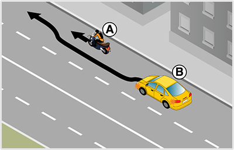
- 390. Köteles-e a ’B’ jelű személygépkocsi vezetője a motorkerékpáros előzése közben irányjelzőjét használni? #703784
- Az előzés esetén akkor köteles az irányjelzőt használni, ha közben irányváltoztatás is történik.
- Az előzést mindenképpen jelezni kell.

- 391. Forgalmi sávon belül az ’A’ jelű jármű egy kerékpárost előz. Használhatja-e ebben az esetben az irányjelzőjét? #703833
- Igen, de ha nem történik az előzés közben irányváltoztatás, akkor nem kötelező az irányjelző használata.
- Igen, de csak abban az esetben, ha az előzést az ’Előzni tilos’ jelzőtábláig be tudja fejezni.
- Nem, mert az irányjelző használata ebben az esetben megtévesztő lehet.
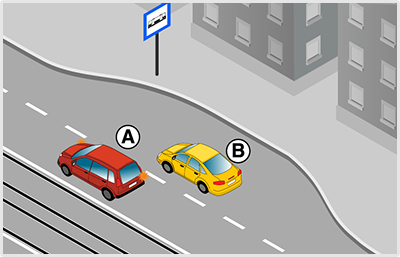
- 392. Ön az ’A’ jelű gépkocsit vezeti. A jobb oldali forgalmi sávba kíván áthajtani. Eközben... #703838
- köteles elsőbbséget adni a ’B’ jelű személygépkocsi részére.
- elsőbbsége van a ’B’ jelű személygépkocsival szemben.
- bizton számíthat arra, hogy a ’B’ jelű személygépkocsi az átsorolását lassítással segíteni fogja.
- 393. Az ’A’ jelű gépkocsi vezetője a képen látható helyen változtathat-e forgalmi sávot? #703839
- Igen, de csak akkor, ha elsőbbséget adott a ’B’ jelű személygépkocsi részére.
- Igen, és elsőbbsége van a ’B’ jelű személygépkocsival szemben.
- Nem, autóbusz-megállónál soha nem szabad forgalmi sávot váltani.
- 394. A képen látható ’B’ jelű jármű vezetője maga elé engedheti-e a forgalmi sávot váltani kívánó ’A’ jelű gépkocsit? #703840
- Igen.
- Nem, az elsőbbségéről soha nem mondhat le.
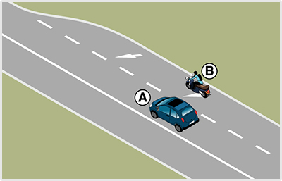
- 395. Ön az ’A’ jelű személygépkocsit vezeti. A képen látható helyzetben maga elé engedheti a ’B’ jelű motorkerékpárt? #703897
- Igen, de ezt egyértelműen lassítással vagy megállással jeleznie kell számára.
- Nem, ebben az esetben köteles élni az elsőbbségi jogával és tilos maga elé engedni a másik járművet.
- Kötelessége ezt megtenni, hiszen ebben a helyzetben a ’B’ jelű motorkerékpárnak van elsőbbsége.
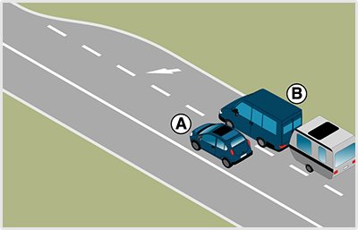
- 396. Ön az ’A’ jelű személygépkocsit vezeti. A képen látható helyzetben maga elé engedheti a ’B’ jelű járműszerelvényt? #703900
- Igen, de ezt egyértelműen lassítással vagy megállással jeleznie kell számára.
- Nem, ebben az esetben köteles élni az elsőbbségi jogával és tilos maga elé engedni a másik járművet.
- Kötelessége ezt megtenni, hiszen ebben a helyzetben a ’B’ jelű járműszerelvénynek van elsőbbsége.
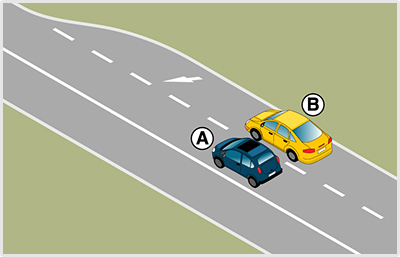
- 397. Ön a ’B’ jelű személygépkocsival a képen látható helyhez közeledik. Mikor közlekedik szabályosan? #703901
- Ha irányjelzést ad balra, elsőbbséget ad az ’A’ jelű személygépkocsi részére, majd áthajt az Öntől balra eső forgalmi sávba.
- Ha intenzíven gyorsít, és megpróbál az érkező ’A’ jelű személygépkocsi elé behajtani.
- Ha számít arra, hogy a megszűnő sáv miatt az ’A’ jelű személygépkocsi előzékenyen maga elé engedi Önt.
- 398. Ön a ’B’ jelű személygépkocsit vezeti. Köteles-e az ábrán látható helyzetben irányjelzőt használni, és a forgalmi sávot elhagyni? #703902
- Igen, mivel az útburkolati jel kötelezi Önt a forgalmi sáv elhagyására, amit csak irányváltoztatással tud végrehajtani.
- A forgalmi sávot el kell hagynia, de irányjelzőt nem kell használnia, hiszen egyértelmű, hogy ebben a forgalmi sávban nem tud továbbhaladni.
- Nem kell irányjelzőt használni, hiszen az útburkolati jelek (nyilak) mutatják a sávelhagyás kötelező irányát.
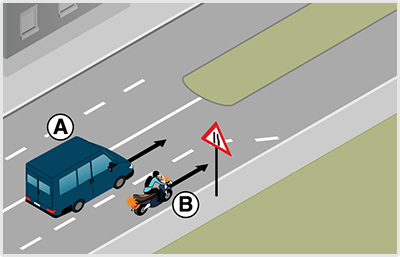
- 399. Melyik jármű haladhat tovább elsőként az ábrán látható helyen? #704022
- Az ’A’ jelű személygépkocsi.
- A ’B’ jelű motorkerékpáros.
- Kölcsönös megegyezés alapján haladhatnak tovább.
- 400. Melyik járműnek kell az irányjelzőjét használnia az ábrán látható helyen? #704023
- A ’B’ jelű motorkerékpárnak, és balra kell irányjelzést adnia.
- A ’B’ jelű motorkerékpárnak, és jobbra kell irányjelzést adnia.
- Az ’A’ jelű személygépkocsinak, és jobbra kell irányjelzést adnia.
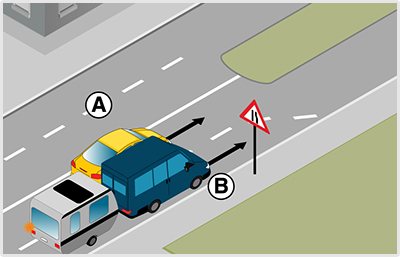
- 401. A képen látható helyen melyik jármű haladhat tovább elsőként? #704024
- Az ’A’ jelű személygépkocsi.
- A ’B’ jelű járműszerelvény.
- Kölcsönös megegyezés alapján haladhatnak tovább.
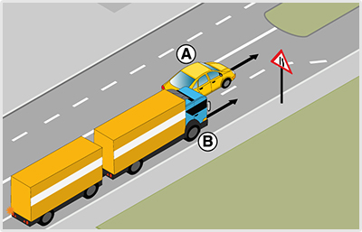
- 402. A képen látható helyen melyik jármű haladhat tovább elsőként? #704026
- Az ’A’ jelű személygépkocsi.
- A ’B’ jelű járműszerelvény.
- Kölcsönös megegyezés alapján haladhatnak tovább.

- 403. A képen látható helyen melyik jármű haladhat tovább elsőként? #704028
- Az ’A’ jelű személygépkocsi.
- A ’B’ jelű tehergépkocsi.
- Kölcsönös megegyezés alapján haladhatnak tovább.

- 404. A képen látható helyen melyik jármű haladhat tovább elsőként? #704030
- Az ’A’ jelű személygépkocsi.
- A ’B’ jelű autóbusz.
- Kölcsönös megegyezés alapján haladhatnak tovább.
- 405. A képen látható helyen melyik járműnek kell az irányjelzőjét használnia? #704032
- A ’B’ jelű autóbusznak, és balra kell jeleznie.
- A ’B’ jelű autóbusznak, és jobbra kell jeleznie.
- Az ’A’ jelű személygépkocsinak, és jobbra kell jeleznie.

- 406. Ön egy olyan úton halad, ahol ezt a közúti jelzést látja. Mikor jár el szabályosan? #704163
- Ha az út vonalvezetését követve nem használja az irányjelzőjét.
- Ha először jobbra, majd a kanyar közepétől balra ad irányjelzést.
- Ha csak jobbra működteti az irányjelzőjét, és a kanyarok után kikapcsolja azt.

- 407. Az ábrázolt jelzőtábla után ki kell kerülnie az úttestre került kődarabokat. Szükséges-e eközben az irányjelzőjét használni? #704178
- Csak akkor, ha a kikerülés irányváltoztatással is jár.
- Csak akkor, ha más is érkezik az úton.
- Ez vészhelyzetnek minősül, és ilyen esetben nem szükséges használni az irányjelzőt.

- 408. Az útkereszteződésben a belső forgalmi sávban közlekedik, amely felett ezt a közúti jelzést látja. Köteles-e irányjelzővel a tervezett balra kanyarodását jelezni? #704263
- Igen.
- Nem.
- Csak akkor, ha szemből más jármű érkezik.

- 409. Ön az ezzel a jelzőtáblával jelölt útkereszteződéshez érkezik. Az alábbiak közül melyik esetben számít Ön irányváltoztatónak? #704264
- Ha egyenesen továbbhaladva letér az út vonalvezetéséről.
- Ha balra kanyarodva követi az út vonalvezetését.
- 410. Megtévesztőnek minősül-e a balra történő irányjelzés, ha Ön ennél a közúti jelzőtáblánál haladva a balra kanyarodó főútvonal vonalvezetését követi? #704265
- Nem.
- Igen.
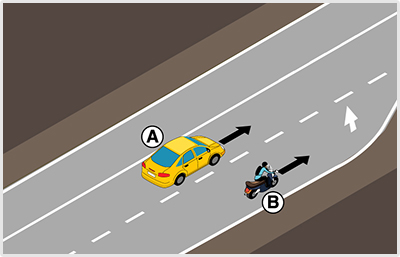
- 411. A képen látható helyen melyik jármű haladhat tovább elsőként? #704282
- Az ’A’ jelű személygépkocsi
- A ’B’ jelű motorkerékpár
- Kölcsönös megegyezés alapján haladhatnak tovább.

- 412. Köteles-e irányjelzőt használni, miközben ezen az útburkolati jelen egyenesen áthajt? #704307
- Nem.
- Igen, mert az útburkolati jel széle terelővonalnak minősül.
- 413. Az alábbiakban felsorolt esetek közül kinek köteles Ön elsőbbséget adni, ha egy egyenrangú útkereszteződéshez érve járművével balra kanyarodik? #704339
- A szemből érkező, egyenesen továbbhaladó jármű részére.
- A balról érkező, egyenesen továbbhaladó jármű részére.
- Senkinek sem.
- 414. Útburkolati jelek hiányában hová kell a járművel besorolni kétirányú úton, ha az útkereszteződésben balra kíván bekanyarodni? #714858
- Az úttest képzeletbeli felezővonala mellé.
- Mindig az úttest bal szélére.
- Ilyen esetben mindig az úttest jobb szélére.
- 415. Útburkolati jelek hiányában hová kell a járművel besorolni, ha osztott pályás úton balra kíván bekanyarodni? #714859
- Az úttest bal szélére.
- A felezővonal mellé.
- Az úttest közepére.
- 416. Közúti jelzés hiányában az alábbiak közül hogyan kell a járművel másik útra bekanyarodni? #714861
- Jobbra kis ívben, balra nagy ívben.
- Jobbra nagy ívben, balra kis ívben.
- Jobbra és balra is kis ívben.
- 417. Az alábbiak közül mely jármű részére kell elsőbbséget adni jobbra bekanyarodó járművel? #714864
- A kerékpársávon érkező részére.
- Az úttesten szemből érkező jármű részére.
- A jobbról érkező jármű részére.
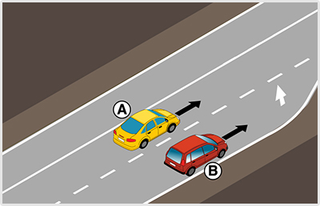
- 418. A képen látható helyen melyik jármű haladhat tovább elsőként? #715002
- Az ’A’ jelű jármű.
- A ’B’ jelű jármű.
- Kölcsönös megegyezés alapján haladhatnak tovább.
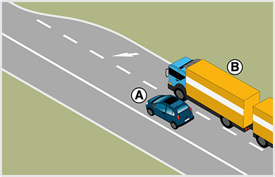
- 419. Ön az ’A’ jelű személygépkocsit vezeti. A képen látható helyzetben maga elé engedheti a ’B’ jelű járműszerelvényt? #715096
- Igen, de ezt egyértelműen lassítással vagy megállással jeleznie kell számára.
- Nem, ebben az esetben köteles élni az elsőbbségi jogával és tilos maga elé engedni a másik járművet.
- Kötelessége ezt megtenni, hiszen ebben a helyzetben a ’B’ jelű járműszerelvénynek van elsőbbsége.
- 420. Használhat-e irányjelzőt abban az esetben, ha az útkereszteződésben a jobbra kanyarodó főútvonalon halad tovább? #715101
- Igen, de csak jobbra.
- Igen, de csak balra.
- Nem.

- 421. Hogyan köteles az ábrán látható ’A’ jelű személygépkocsi vezetője az irányjelzőt használni? #715143
- Az előzés megkezdésekor balra, majd a visszatérés előtt jobbra jelezve.
- Csak az előzés megkezdésekor balra jelzéssel. A visszatérést már nem kell jeleznie.
- Mivel az úton nem érkezik más, ezért itt nem kell irányjelzőt használni.
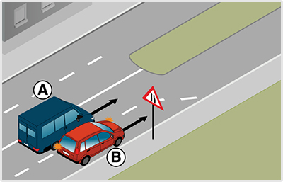
- 422. A képen látható helyen melyik járműnek kell az irányjelzőjét használnia? #715145
- A ’B’ jelű személygépkocsinak, és balra kell jeleznie.
- A ’B’ jelű személygépkocsinak, és jobbra kell jeleznie.
- Az ’A’ jelű személygépkocsinak, és jobbra kell jeleznie.
- 423. Az alábbiak közül mikor kell irányjelzőt használnia? #715393
- Amikor lehajt az útpadkára.
- Amikor behajt a körforgalomba.
- Amikor a kanyarodó főútvonalon követi a főútvonal vonalvezetését.
- 424. Lakott területen az úttest mellett futkározó gyerekeket lát. Adhat-e figyelmeztetésképpen hangjelzést? #715422
- Amennyiben úgy látja, hogy a gyerekek balesetveszélyesen a jármű elé léphetnek, akkor igen.
- Nem, mert kizárólag csak egy másik jármű vonatkozásában használhat hangjelzést.
- Nem, mert csak lakott területen kívül használhat hangjelzést.
- 425. Adható-e hangjelzés, ha lakott területen kívüli úton szemből érkező hajtott állatokkal találkozik? #715444
- Igen, de csak balesetveszély esetén.
- Csak akkor, ha az állatokat hajtó személyt nem látja.
- Igen, minden esetben.
- 426. Parkoló járművéből egy figyelmetlenül az úton átkelő gyalogost pillant meg. Használhat-e figyelmeztetésképpen hangjelzést? #715474
- Igen, ha ezzel egy esetleges balesetet előz meg.
- Nem, mert gyalogosok vonatkozásában nem használhat hangjelzést.
- 427. Lakott területen egy kerékpáros előzésébe kezd. Adhat-e hangjelzést előzési szándékának jelzésére? #715498
- Nem
- Igen
- Csak akkor, ha a hangjelzésével az előzés tényére szeretné figyelmeztetni.

- 428. A képen látható ’B’ jelű jármű a lakott területen lévő belső forgalmi sávban utolér egy lassabban haladó járművet. Adhat-e hangjelzést a gyorsabb haladás érdekében? #715537
- Nem, mert lakott területen nem szabad hangjelzést adni az előzési szándék jelzésére.
- Igen, mert a szabálytalanul lassan haladó járművek figyelmeztetésére bármikor szabad hangjelzést használni.
- Igen, mert az előzési szándék jelzésére bárhol szabad hangjelzést adni.
- 429. Irányadóak-e a bekanyarodás szabályai az útkereszteződésen kívüli bekanyarodásra is? #721374
- Általában igen.
- Nem.
- 430. Az alábbiak közül hová kell a járművel besorolni, mielőtt bekanyarodik az útkereszteződésben? #721375
- Az útburkolati jelek által meghatározott forgalmi sávba.
- Bármely forgalmi sávba.
- A legbiztonságosabbnak ítélt forgalmi sávba.
- 431. Útburkolati jelek hiányában hová kell a járművel besorolni, ha az egyirányú forgalmú útról balra szeretne bekanyarodni? #721376
- Az úttest bal szélére.
- Az úttest jobb szélére.
- Az úttest közepére.
- 432. Útburkolati jelek hiányában hová kell a járművel besorolni, ha villamospályával ellátott úttestről szeretne bekanyarodni? #721378
- Ha a besorolás a villamos forgalmát zavarná, akkor a villamos elhaladásához szükséges területet szabadon kell hagyni.
- Mindig a villamosvágányra.
- Mindig a villamosvágány mellé.
- 433. Elsőbbséget kell-e adni a balra bekanyarodó járművel a szemből érkező, jobbra bekanyarodó jármű részére? #721379
- Ha a közúti jelzésekből más nem következik, akkor igen.
- Nem.
- 434. Elsőbbséget kell-e adni a balra bekanyarodó járművel a szemből érkező és egyenesen továbbhaladó jármű részére? #721380
- Ha a közúti jelzésekből más nem következik, akkor igen.
- Nem.
- 435. Balra történő bekanyarodás előtt meg kell-e győződni arról, hogy a bekanyarodni szándékozó jármű előzését balról más jármű nem kezdte-e meg? #721382
- Igen, olyan úton, amely nem alkalmas párhuzamos közlekedésre.
- Igen, mindenhol.
- Nem.
- 436. Balra történő bekanyarodás előtt meg kell-e győződni arról, hogy a bekanyarodni szándékozó jármű kikerülését balról más jármű nem kezdte-e meg? #721383
- Igen, olyan úton, amely nem alkalmas párhuzamos közlekedésre.
- Igen, mindenhol.
- Nem.
- 437. Kell-e elsőbbséget adni annak a gyalogosnak, aki annak az útnak az úttestjén halad át, amelyre a jármű bekanyarodik? #721386
- Igen.
- Nem.
- 438. Kell-e a járművezetőnek számítania arra, hogy a nagyméretű járművek vezetői bekanyarodás előtt az általános szabályoktól eltérően sorolnak be? #721388
- Igen.
- Nem.
- 439. Hogyan kell a járművel másik útra bekanyarodni az alábbiak közül? #721390
- Úgy, hogy a jármű a bekanyarodás után a menetirány szerinti jobb oldalon maradjon.
- A bekanyarodás után a menetirány szerinti bal oldalra is szabad érkezni.
- Úgy, hogy a továbbhaladás gyorsasága biztosított legyen.
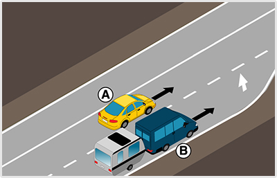
- 440. A képen látható helyen melyik jármű haladhat tovább elsőként? #721559
- Az ’A’ jelű személygépkocsi.
- A ’B’ jelű járműszerelvény.
- Kölcsönös megegyezés alapján haladhatnak tovább.
- 441. Ön a ’B’ jelű járművet vezeti. A képen látható helyen... #721562
- elsőbbséget kell adnia az ’A’ jelű jármű részére.
- elsőbbsége van az ’A’ jelű járművel szemben.
- meg kell egyezniük a továbbhaladási sorrendben.
- 442. Ön a ’B’ jelű járművet vezeti. Köteles-e irányjelzővel jelezni, ha átsorol a belső forgalmi sávba? #721563
- Igen, balra, mert forgalmi sávot fog változtatni.
- Igen, jobbra, mert forgalmi sávot fog változtatni.
- Nem, mert az érkező járművek úgyis látják, hogy a külső forgalmi sáv meg fog szűnni.
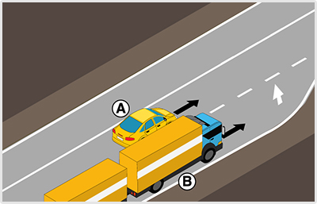
- 443. A képen látható helyen melyik jármű haladhat tovább elsőként? #721564
- Az ’A’ jelű jármű.
- A ’B’ jelű jármű.
- Kölcsönös megegyezés alapján haladhatnak tovább.

- 444. A képen látható helyen melyik jármű haladhat tovább elsőként? #721567
- Az ’A’ jelű jármű.
- A ’B’ jelű jármű.
- Kölcsönös megegyezés alapján haladhatnak tovább.
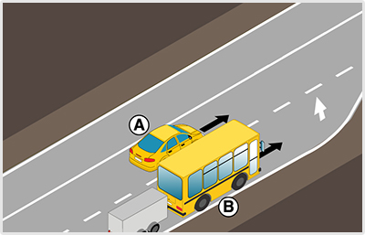
- 445. A képen látható helyen melyik jármű haladhat tovább elsőként? #721570
- Az ’A’ jelű jármű.
- A ’B’ jelű jármű.
- Kölcsönös megegyezés alapján haladhatnak tovább.

- 446. A képen látható helyen melyik jármű haladhat tovább elsőként? #721573
- Az ’A’ jelű jármű.
- A ’B’ jelű jármű.
- Kölcsönös megegyezés alapján haladhatnak tovább.
- 447. Az úttesten nem láthatóak útburkolati jelek. Egy kerékpárost csak úgy tud megelőzni, hogy pár centiméterre áthajt a menetirány szerinti bal oldalra. A manőver kapcsán szükséges-e az irányjelzőt használnia? #721577
- Igen, mert a képzeletbeli felezővonal átlépése is irányváltoztatás.
- Nem, mert csak felfestett felezővonal esetén kell irányjelzőt használnia.
- Nem, mert a kerékpárosok előzésekor nem szükséges irányjelzőt használni.
- 448. A körforgalom külső sávjából az útburkolati jelek kivezetik a körforgalomból járművét. Köteles-e ebben az esetben irányjelzést adni? #721579
- Igen.
- Nem.
- Csak akkor, ha a körforgalom lakott területen kívül van.
- 449. A körforgalom belső sávjából az útburkolati jelek kivezetik a forgalmat a körforgalomból. Hogyan kell az irányjelzőjét használni? #721580
- Jobbra történő működtetéssel.
- Először jobbra, majd a kihajtás előtt balra működtetéssel.
- Abban az esetben, ha a forgalmi sávok kivezetik a forgalmat, nem kötelező irányjelzőt használnia.
- 450. Körforgalmú útra történő bekanyarodás előtt köteles-e irányjelzést adni? #721582
- Nem.
- Igen.
- Igen, de csak akkor, ha a körforgalom párhuzamos közlekedésre alkalmas.
- 451. Mikor mellőzhető az irányjelző használata a körforgalomból történő kihajtás közben? #721583
- Sosem mellőzhető, mindig szükséges.
- Csak akkor, ha a forgalmi sávok kivezetik a forgalmat a körforgalomból.
- Csak akkor, ha a körforgalomban fényjelző készülék irányítja a forgalmat.
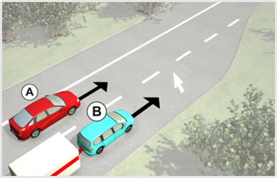
- 452. A képen látható helyen melyik jármű haladhat tovább elsőként? #722998
- Az ’A’ jelű személygépkocsi.
- A ’B’ jelű járműszerelvény.
- Kölcsönös megegyezés alapján haladhatnak tovább.
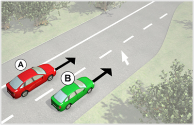
- 453. Ön a ’B’ jelű járművet vezeti. A képen látható helyen... #723001
- elsőbbséget kell adnia az ’A’ jelű jármű részére.
- elsőbbsége van az ’A’ jelű járművel szemben.
- meg kell egyezniük a továbbhaladási sorrendben.
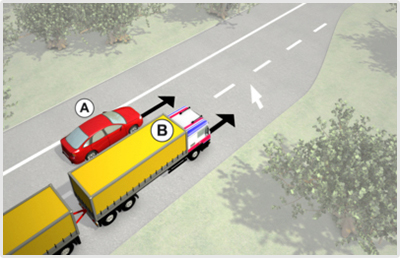
- 454. A képen látható helyen melyik jármű haladhat tovább elsőként? #723003
- Az ’A’ jelű jármű.
- A ’B’ jelű járműszerelvény.
- Kölcsönös megegyezés alapján haladhatnak tovább.

- 455. A képen látható helyen melyik jármű haladhat tovább elsőként? #723006
- Az ’A’ jelű jármű.
- A ’B’ jelű jármű.
- Kölcsönös megegyezés alapján haladhatnak tovább.
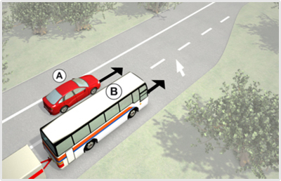
- 456. A képen látható helyen melyik jármű haladhat tovább elsőként? #723009
- Az ’A’ jelű jármű.
- A ’B’ jelű járműszerelvény.
- Kölcsönös megegyezés alapján haladhatnak tovább.

- 457. A képen látható helyen melyik jármű haladhat tovább elsőként? #723012
- Az ’A’ jelű jármű.
- A ’B’ jelű jármű.
- Kölcsönös megegyezés alapján haladhatnak tovább.

- 458. A képen látható helyen melyik járműnek kell az irányjelzőjét használni? #723465
- A ’B’ jelű járműnek, és balra kell jeleznie.
- A ’B’ jelű járműnek, és jobbra kell jeleznie.
- Az ’A’ jelű személygépkocsinak, és jobbra kell jeleznie.
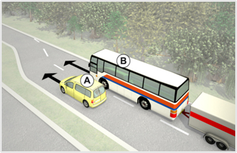
- 459. A képen látható helyen melyik járműnek kell az irányjelzőjét használni? #723474
- A ’B’ jelű járműszerelvénynek, és balra kell jeleznie.
- A ’B’ jelű járműszerelvénynek, és jobbra kell jeleznie.
- Az ’A’ jelű személygépkocsinak, és jobbra kell jeleznie.

- 460. A képen látható helyen melyik járműnek kell az irányjelzőjét használni? #723477
- A ’B’ jelű autóbusznak, és balra kell jeleznie.
- A ’B’ jelű autóbusznak, és jobbra kell jeleznie.
- Az ’A’ jelű személygépkocsinak, és jobbra kell jeleznie.

- 461. Ön a kormánykerékkel jelzett járművet vezeti. Melyik járműnek kell az ábrán látható helyen az irányjelzőjét használni? #723480
- Az Ön által vezetett járműnek kell balra irányjelzést adnia.
- Az Ön által vezetett járműnek kell jobbra irányjelzést adnia.
- Az ’A’ jelű személygépkocsinak kell jobbra irányjelzést adnia.

- 462. A képen látható ’B’ jelű jármű a lakott területen lévő belső forgalmi sávban utolér egy lassabban haladó járművet. Adhat-e hangjelzést a gyorsabb haladási szándéka jelzésére? #723489
- Nem, mert lakott területen nem szabad hangjelzést adni az előzési szándék jelzésére.
- Igen, mert a szabálytalanul lassan haladó járművek figyelmeztetésére bármikor szabad hangjelzést használni.
- Igen, mert az előzési szándék jelzésére bárhol szabad hangjelzést adni.
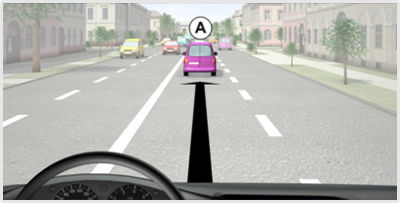
- 463. Ön a kormánykerékkel jelzett járművet vezetve a lakott területen lévő belső forgalmi sávban utolér egy lassabban haladó járművet. Adhat-e hangjelzést a gyorsabb haladási szándéka jelzésére? #723493
- Nem, mert lakott területen nem szabad hangjelzést adni az előzési szándék jelzésére.
- Igen, mert a szabálytalanul lassan haladó járművek figyelmeztetésére bármikor szabad hangjelzést használni.
- Igen, mert az előzési szándék jelzésére bárhol szabad hangjelzést adni.

- 464. Köteles-e az ’A’ jelű személygépkocsi a képen látható helyzetben az irányjelzőjét folyamatosan működtetni? #723599
- Nem.
- Igen.

- 465. Ön a kormánykerékkel jelzett járművet vezeti. Köteles-e a képen látható helyzetben az irányjelzőjét folyamatosan működtetni? #723603
- Nem.
- Igen.
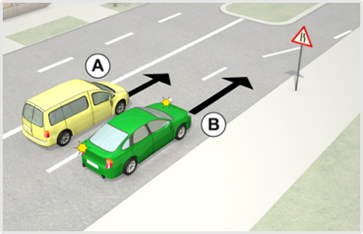
- 466. A képen látható helyen melyik jármű haladhat tovább elsőként? #723613
- Az ’A’ jelű személygépkocsi.
- A ’B’ jelű személygépkocsi.
- Kölcsönös megegyezés alapján haladhatnak tovább.
- 467. Ön a ’B’ jelű személygépkocsit vezeti. A képen látható helyen... #723614
- elsőbbséget kell adnia az ’A’ jelű személygépkocsi részére.
- elsőbbsége van az 'A' jelű személygépkocsival szemben.
- meg kell egyezniük a továbbhaladási sorrendben.
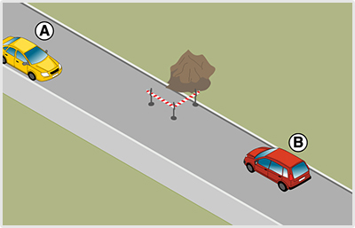
- 468. Kitérés közben megköszönheti-e a ’B’ jelű jármű vezetője hangjelzéssel a szemből érkező udvarias viselkedését? #723848
- Nem.
- Igen, de csak lakott területen kívül.
- 469. Ön az ’A’ jelű személygépkocsit vezeti. Az ábrán látható helyzetben maga elé engedheti-e a ’B’ jelű személygépkocsit? #723849
- Igen, de ezt egyértelműen, például lassítással vagy megállással kell jeleznie számára.
- Nem, ebben az esetben köteles élni az Önt megillető elsőbbségi joggal, és nem engedheti maga elé a ’B’ jelű járművet.
- Kötelessége ezt megtenni, hiszen ebben a helyzetben a ’B’ jelű személygépkocsinak van elsőbbsége.

- 470. Ön az ’A’ jelű személygépkocsit vezeti. A képen látható helyzetben maga elé engedheti a ’B’ jelű tehergépkocsit? #723850
- Igen, de ezt egyértelműen lassítással vagy megállással jeleznie kell számára.
- Nem, ebben az esetben köteles élni az elsőbbségi jogával és tilos maga elé engedni a másik járművet.
- Kötelessége ezt megtenni, hiszen ebben a helyzetben a ’B’ jelű tehergépkocsinak van elsőbbsége.
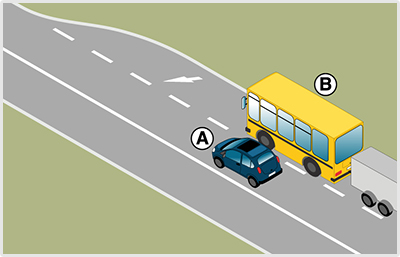
- 471. Ön az ’A’ jelű személygépkocsit vezeti. A képen látható helyzetben maga elé engedheti a ’B’ jelű járműszerelvényt? #723851
- Igen, de ezt egyértelműen lassítással vagy megállással jeleznie kell számára.
- Nem, ebben az esetben köteles élni az elsőbbségi jogával és tilos maga elé engedni a másik járművet.
- Kötelessége ezt megtenni, hiszen ebben a helyzetben a ’B’ jelű autóbusznak van elsőbbsége.

- 472. Ön az ’A’ jelű személygépkocsit vezeti. A képen látható helyzetben maga elé engedheti a ’B’ jelű autóbuszt? #723852
- Igen, de ezt egyértelműen lassítással vagy megállással jeleznie kell számára.
- Nem, ebben az esetben köteles élni az elsőbbségi jogával és tilos maga elé engedni a másik járművet.
- Kötelessége ezt megtenni, hiszen ebben a helyzetben a ’B’ jelű autóbusznak van elsőbbsége.

- 473. A képen látható helyen melyik járműnek kell az irányjelzőjét használni? #723857
- A ’B’ jelű járműszerelvénynek, és balra kell jeleznie.
- A ’B’ jelű járműszerelvénynek, és jobbra kell jeleznie.
- Az ’A’ jelű személygépkocsinak, és jobbra kell jeleznie.
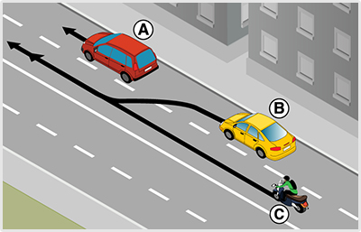
- 474. Az ábrázolt forgalmi szituációban a ’B’ jelű jármű a terelővonalat átlépve a belső forgalmi sávba kíván hajtani. Eközben... #723858
- köteles elsőbbséget adni a belső forgalmi sávban érkező motorkerékpárnak.
- a belső forgalmi sávban érkező motorkerékpár vezetőjét még enyhe lassításra sem kényszerítheti.
- számíthat arra, hogy a belső forgalmi sávban érkező motorkerékpár vezetője előzékenyen maga elé fogja engedi.
- 475. A képen látható helyen melyik jármű haladhat tovább elsőként? #723862
- Az ’A’ jelű személygépkocsi.
- A ’B’ jelű személygépkocsi.
- Kölcsönös megegyezés alapján haladhatnak tovább.
- 476. Ön a ’B’ jelű személygépkocsit vezeti. A képen látható helyen... #723863
- elsőbbséget kell adnia az ’A’ jelű személygépkocsi részére.
- számíthat arra, hogy az ’A’ jelű személygépkocsi maga elé engedi.
- meg kell egyezniük a továbbhaladási sorrendben.

- 477. A képen látható helyen melyik járműnek kell az irányjelzőjét használni? #724049
- A ’B’ jelű motorkerékpárnak, és balra kell jeleznie.
- A ’B’ jelű motorkerékpárnak, és jobbra kell jeleznie.
- Az ’A’ jelű személygépkocsinak, és jobbra kell jeleznie.

- 478. A képen látható helyen melyik járműnek kell az irányjelzőjét használni? #724052
- A ’B’ jelű járműszerelvénynek, és balra kell jeleznie.
- A ’B’ jelű járműszerelvénynek, és jobbra kell jeleznie.
- Az ’A’ jelű személygépkocsinak, és jobbra kell jeleznie.

- 479. Melyik járműnek kell az ábrán látható helyen az irányjelzőjét használni? #724055
- A ’B’ jelű személygépkocsinak kell balra irányjelzést adnia.
- A ’B’ jelű személygépkocsinak kell jobbra irányjelzést adnia.
- Az ’A’ jelű személygépkocsinak kell jobbra irányjelzést adnia.

- 480. A képen látható helyen melyik járműnek kell az irányjelzőjét használni? #724058
- A ’B’ jelű járműszerelvénynek, és balra kell jeleznie.
- A ’B’ jelű járműszerelvénynek, és jobbra kell jeleznie.
- Az ’A’ jelű személygépkocsinak, és jobbra kell jeleznie.

- 481. A képen látható helyen melyik járműnek kell az irányjelzőjét használni? #724061
- A ’B’ jelű tehergépkocsinak, és balra kell jeleznie.
- A ’B’ jelű tehergépkocsinak, és jobbra kell jeleznie.
- Az ’A’ jelű személygépkocsinak, és jobbra kell jeleznie.

- 482. A képen látható helyen melyik járműnek kell az irányjelzőjét használni? #724066
- A ’B’ jelű autóbusznak, és balra kell jeleznie.
- A ’B’ jelű autóbusznak, és jobbra kell jeleznie.
- Az ’A’ jelű személygépkocsinak, és jobbra kell jeleznie.